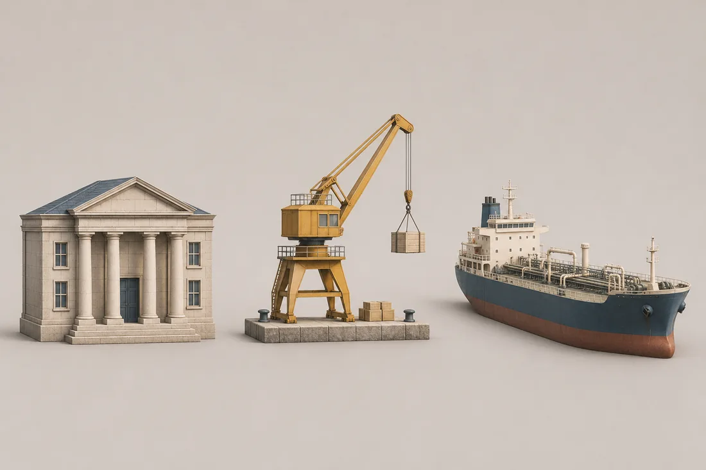

Världsreportaget
· 4 min läsning
Tre vägar till krigskassan
När en betalning inte kan gå genom en bank kan den gå genom en annan. Det är det problemet EU-kommissionen försöker komma åt med sitt 22:a sanktionsförslag mot Ryssland, som presenterades på måndagen. Förslaget riktar sig mot omkring 60 ryska banker, ytterligare drygt 70 fartyg i den så kallade skuggflottan och aktörer som kommissionen anser hjälper till att hålla betalningar och handel igång. Det är ett förslag, inte nya regler som redan gäller.

AI-genererad redaktionell illustration
Om bilden
Bilden är en AI-genererad tredimensionell sakillustration. Banken står för betalningen, kranen för arbetet som krävs för att hantera en last och tankfartyget för transporten. Motiven är påhittade. Deras placering anger varken en färdväg, en viss sanktionerad aktör eller hur stora handelsflödena är.
Tänk på en last diesel från ett ryskt raffinaderi. Köparen behöver betala säljaren. Ett raffinaderi behöver kunna fortsätta drivas även när en anläggningsdel går sönder. Ett rederi behöver ett fartyg som kan ta lasten. På måndagen lade kommissionens ordförande Ursula von der Leyen fram förslag som träffar vart och ett av de leden. Syftet är att försvåra Rysslands finansiering av kriget mot Ukraina. Vad det betyder för en enskild affär blir tydligare om man börjar vid bankdisken.
Vad banken får göra
När köparens bank skickar en betalningsinstruktion till säljarens bank behöver båda förstå vilket konto som avses, vilket belopp som ska betalas och i vilken valuta. SWIFT ger bankerna ett gemensamt språk och ett nät för sådana meddelanden. Pengarna flyttas genom bankerna och deras konton. Den som läser ett SWIFT-meddelande kan alltså se en instruktion om att betala. Meddelandet i sig är inget kvitto på att mottagaren fått betalt.
Kommissionen vill utvidga transaktionsförbudet till omkring 60 ryska banker och koppla bort dessa banker från SWIFT. För en europeisk bank uppstår då två olika frågor. Kan den skicka instruktionen genom nätverket? Får den enligt EU:s regler genomföra affären? En annan meddelandekanal kan ändra svaret på den första frågan. Den gör inte en förbjuden transaktion tillåten. EU har använt båda verktygen tidigare. I juli 2025 utvidgade EU ett tidigare förbud mot meddelandetjänster till ett transaktionsförbud för vissa ryska banker. Det nya förslaget skulle föra in fler banker under sådana begränsningar.
Kommissionen pekar också ut nätverk för kryptotillgångar och betalningar i Ryssland och i länder utanför unionen. Här är det betalningsförmedlarens roll i affären som kommissionen vill komma åt. Uttalandet ger kommissionens bedömning av risken för kringgående. Det ger inget mått på hur stora belopp förmedlarna hanterar.
När en reparation behövs
För ett europeiskt serviceföretag kan den avgörande handlingen vara ett uppdrag på ett raffinaderi. Kommissionen vill hindra europeiska företag från att hjälpa till att bygga, driva eller reparera rysk energiinfrastruktur och lyfter särskilt fram raffinaderierna. För första gången vill den låta också tjänster på elområdet omfattas av just det förbudet. Det handlar här om vilken hjälp ett europeiskt företag får ge till en anläggning i Ryssland. Uttalandet ger inget stöd för att all europeisk elhandel skulle stoppas.
Sedan återstår själva transporten. Kommissionen vill sätta upp ytterligare drygt 70 fartyg på sanktionslistan. Den hänför dem till skuggflottan, de fartyg som enligt EU håller rysk oljeexport i gång trots restriktionerna. Kommissionen vill dessutom införa ett förbud som omfattar tankfartyg försäkrade i Ryssland. Det är två olika sätt att ange vilka fartyg som berörs. En fartygslista pekar ut enskilda skrov. Ett försäkringsvillkor utgår från var tankfartyget är försäkrat. Hur den senare regeln skulle tillämpas på en viss transport får utläsas ur den slutliga lagtexten, om den antas.
Vem avgör om det får effekt?
Paketet har också en idrottsdel. Kommissionen vill förbjuda ryska lag och idrottare att tävla under rysk flagg vid evenemang i EU.
För bankerna, serviceföretaget och rederiet blir nästa hållpunkt vad medlemsländerna enas om i EU:s råd. Det utrikespolitiska sanktionsbeslutet kräver enhällighet. En rådsförordning anger de ekonomiska regler som företagen ska följa. De antagna rättsakterna publiceras i EU:s officiella tidning. Sedan är det i första hand medlemsländernas myndigheter som ska se till att de följs.
För att bedöma vad paketet betyder för krigskassan behövs därför belägg från affärerna efter ett eventuellt beslut. Fick säljaren betalt? Kunde raffinaderiet få sin reparation utförd? Gick lasten iväg med ett annat fartyg, blev resan dyrare eller blev dieseln kvar? Först när det går att följa sådana utfall går det att skilja handel som har flyttat från handel som faktiskt har försvårats.